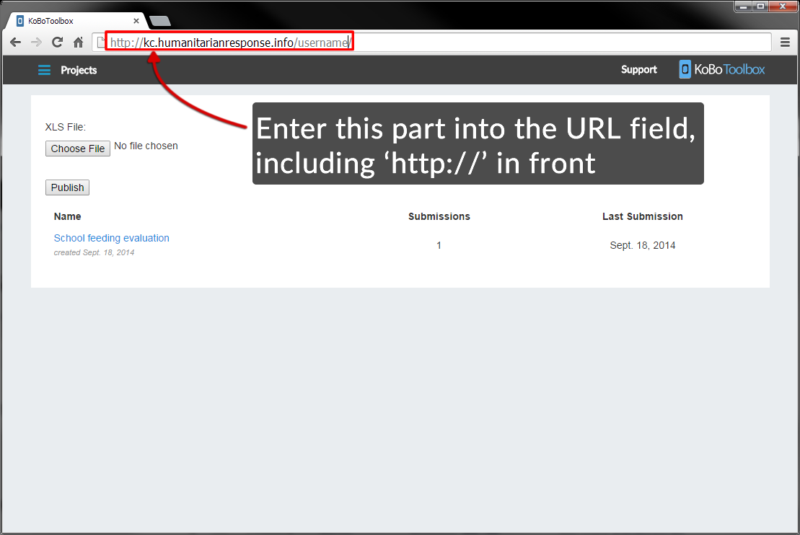
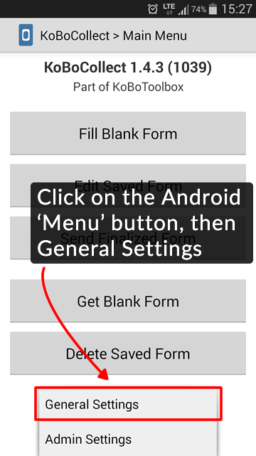
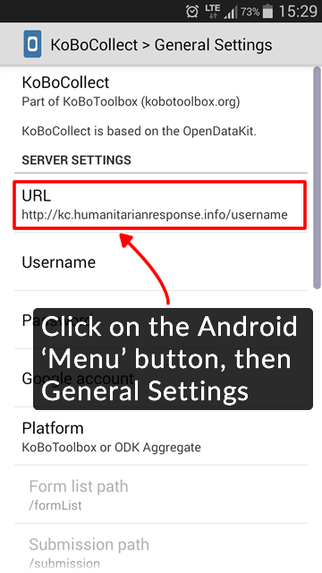
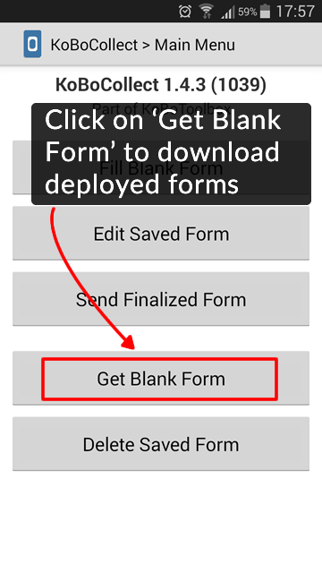
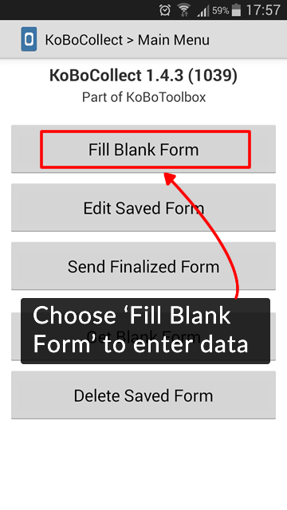
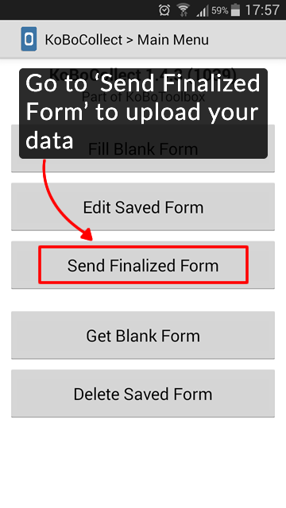
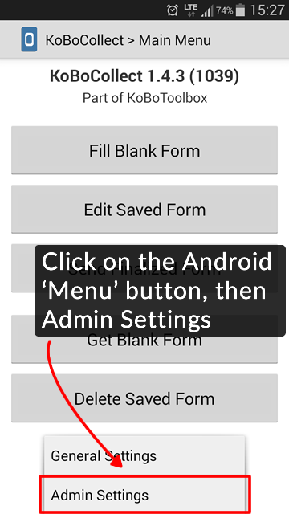
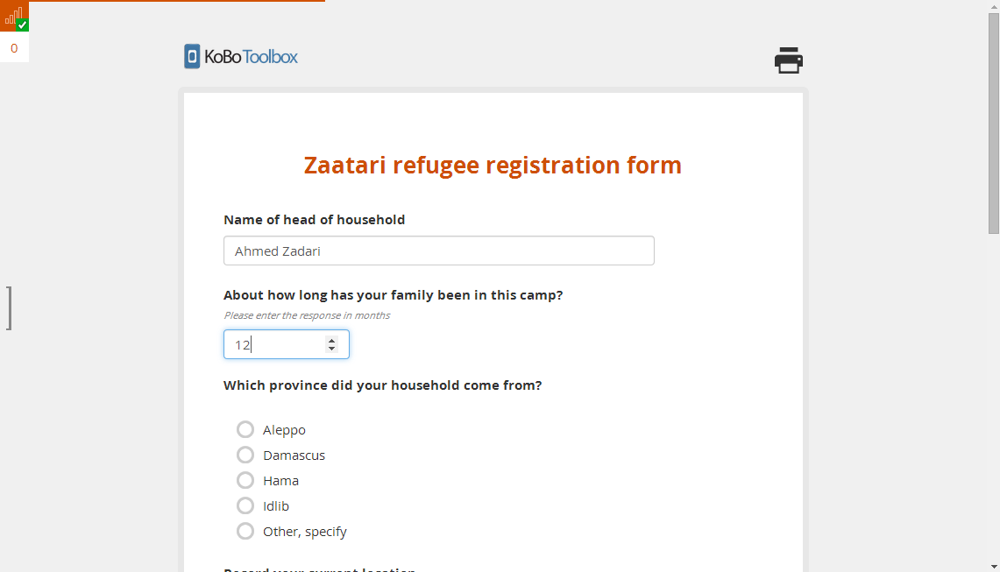
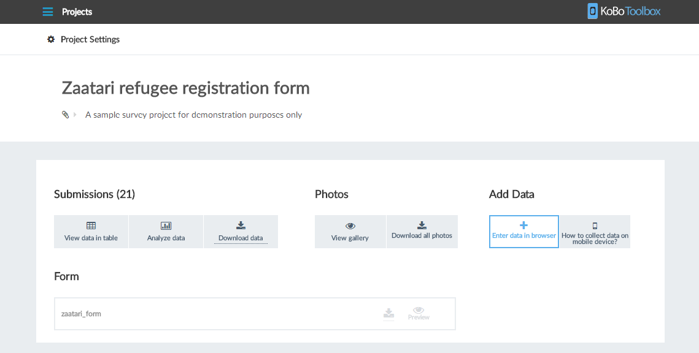

What is “customisation”?
Customisation (or adaptation) refers to the process during which the proposed Protection Assessment questionnaires are tailored to the population/context where a the Assessment is being conducted (that is, a national assessment, or a assessment conducted for a population group or for a selected area within a country), using standard principles and approaches, while maintaining global comparability of the indicators that will be derived from the collected data.
The customisation process is by no means an easy and straightforward one. Without a detailed understanding of all the standard tools and of the general principles and recommendations, customisation of questionnaires should not be attempted at country level without the assistance of an expert. During the customisation process, it is also absolutely critical that lessons learned from previous data collection activities are used effectively, and wherever necessary, tools are tested before final decisions are made. Testing may include organized pre-testing, field testing, piloting, and in some cases, cognitive testing. Analysis of raw data from previous assessment and data collection activities, as well as results from these efforts should also be undertaken for successful customisation of standard questionnaires.
What kind of “Customisation”?
Customisation of the “Questionnaire Modules”, “Questions” and “Response Categories” are necessary for at least two basic reasons: * No single country/survey is expected or recommended to use all of the modules in proposed questionnaires * No single standard questionnaire can accurately represent all human experience around the globe
Customisation covers the following types of changes to the standard protection questionnaires: * Country-/assessment-specific modifications to already existing standard questions and response codes, * Deletions from the standard questionnaires, and * Additions to the proposed questionnaires.
Modification
Certain parts of the proposed questionnaires must be modified. Indeed, in several instances, the proposed questionnaires include clear directives that a change or modification needs to be made. These cases are indicated using text such as “insert local name”. Similarly, response categories that require customisation are also indicated.
Deletion
No assessment is recommended to retain all of the modules and questions of the proposed protection questionnaires. First, there will always be some topics that will not be relevant in certain countries or regions. Second, decisions on the content of any assessment will ideally be made as a result of a thorough data gap assessment, generally based on the required analysis, and, for example, when information is available from other recent data sources, certain modules or sets of questions will be dropped. The process and analysis involved in a comprehensive data needs assessment will vary, but is a crucial step in determining the content of the assessment.
Determining what to exclude from the assessment is a balancing act that should take data needs into account, but also learn from countless experiences of data quality issues as a result of overloaded questionnaires. Country priorities will guide decisions, but may also work against achieving an optimum questionnaire size if negotiations turn more political than technical.
A final consideration will also rest with the ability to implement an adequate sample size, as this is often constrained by budget on one hand and on the other the known data quality issues associated with large sample sizes. For instance, some indicators are difficult to measure in low fertility settings, demanding higher sample sizes or complicated sample designs. Unless such issues can be technically addressed, the exclusion of such indicators may be necessary.
Addition
Some Protection Asessment may also add topics, modules and questions which are not already in the proposed questionnaires. These could include additions that the proposed questionnaires already point to (for example, adding household assets to the list already in the questionnaires), or additions of modules or sets of questions that are not covered in the proposed questionnaires.
From the onset of considerations of what could be added in, you should know that this will affect the technical support available as well as require changes and considerations throughout the package of tools available, from sampling, training, instructions, and data entry application to tabulations and reporting.
As with the above exercise of deleting from the questionnaires, your entry point should be the indicator list or, alternatively, the tabulation plan. Questionnaire design is secondary to the need for precise information on what such proposed additions would be measuring and how such would be presented.
Only questions that are previously well-tested and validated should be included. Questions are often imported from other household surveys that have been conducted in the country. This does not necessarily mean that they are validated nor does it mean that such questions can work within the frame of a Protection Assessment.
If additions are made, please ensure that formatting and coding follow the rules in place for the proposed questionnaires. For entirely new topics it may be useful to build a new module and in other cases you will need to append to an existing module or insert within the existing flow. If you create new questions, submit them for addition in the library here.
Rules and Useful Tips for Customisation
Customise but do not compromise global comparability: * Assess the implications of changes; * Check that all required questions to calculate the indicators are included; * Check previous surveys to see how the customisation was done; * Consider translations for all major languages spoken among the survey population – Arabic, Kurdish,etc..
Pre-test rigorously to make sure that : * the questions are understood and the response categories are meaningful; * the language style that can be understood by everyone; * the skip-logic functions within the form are working well;
Eligible Respondents for the Household Questionnaire
In each sampled household you visit, you should begin by interviewing a knowledgeable adult member of the household to fill in the Household Questionnaire. All modules of the Household Questionnaire will be administered to this person, referred to as the Household Respondent, including the modules in the questionnaire where the information collected is about other household members. The Education module is one such example.
For the purposes of the Household Questionnaire, an adult is defined as someone age 15 years and over. However, young adults (below age 18) may not be the most ideal members to interview. Therefore, in cases when there is another older household member (for instance, the parent of the 15 year-old) available to interview, you should prefer to interview this person who is likely to be more knowledgeable about the household. Whenever possible, you should use your preferences to interview the household member who is likely to be more knowledgeable.
On the other hand, interviewing the household head is not a requirement and you are not expected to ask for the household head to do the interview.
You should also keep in mind that for practical reasons, it may be an advantage to begin the Household Questionnaire with a mother or primary caretaker (of a child under five years of age), since many of the questions/modules are about children, and mothers/caretakers provide more accurate responses to such questions better than anybody else. While you should not make a special effort to ensure this, you will indeed start the interview with such persons in many cases, since, in practice, these persons are more likely to be at home than, say, male household heads.
There should only be one respondent to the Household Questionnaire and the other members of the household should not respond to any part of the questionnaire. Multiple respondents to the questionnaire will undoubtedly lead to an uncontrolled, low quality interview, and may lead to errors in recording responses. Ideally, the household respondent is not expected to consult other members that may be available in the household. However, you may allow the household respondent to ask other members in order to get more correct information, especially on information such as age, which may affect the eligibility of some members for individual questionnaires, or modules where age checks are important, such as the education, child labour, or the child discipline modules.
Eligible Respondents for the Individual Questionnaires
When you have completed the Household Questionnaire, you will have identified women (age 15-49), men (age 15-49) and ‘mothers or primary caretakers’ (age 15 or above) of children under five to whom you or other interviewers in your team will administer the individual questionnaires. * You should interview separately all women age 15 through 49 who reside in the household to fill in the Questionnaire for Individual Women. * You should interview separately all men age 15 through 49 who reside in the household to fill in the Questionnaire for Individual Men. * You should administer the Questionnaire for Children Under Five to mothers of children under 5 years of age who are residing in the household. If the mother is not recorded in the List of Household Members (if the mother is not a member of this household), then the person who is acknowledged by the household respondent as the primary caretaker (in HL15 in the List of Household Members of the Household Questionnaire) should be the respondent to the Questionnaire for Children Under Five.
You will identify these individuals by completing the List of Household Members in the Household Questionnaire.
If you visit a household where there are no members eligible for the individual questionnaires, you must still ask questions about the household to a knowledgeable adult household member and complete the Household Questionnaire.
As a general rule, the respondent to any of the questionnaires must be at least15 years old. This also applies to the mother or primary caretaker of a child under age 5; in the rare event that a mother or primary caretaker is less than age 15 you should record ‘Other’ as result of the interview in UF9 and specify that the mother/caretaker is less than age 15 and therefore cannot be interviewed. No other respondent is permitted than the mother/caretaker identified in the List of Household members.
Finding and Re-Visiting Households
Your supervisor will give you a list or tell you how to find the households to visit. You must visit all these households and should not replace these households with other households that are not selected for interviews.
If no one is at home when you go to interview the household, ask the neighbours whether anyone lives at this location. If it is occupied, ask the neighbours when the household members will return. Arrange with your supervisor to go back to the location when the household members are expected to be back; for example, at the end of the day. Note such plans on your cluster control sheet and note the time you are to return on the first page of the questionnaire (Household Information Panel).
If no adult household member is at home, arrange to come back at another time. Do not interview a household member younger than age 15, a temporary caretaker of the children, such as a daytime babysitter, and do not interview anyone who does not usually live in the household. The rule to interview a knowledgeable adult household member cannot be relaxed or violated under any circumstances.
Each household in the sample has to be visited at least three times (two re-visits) before you can mark HH9 (Result of household interview) as ‘No household member or no competent respondent at home at time of visit’, unless otherwise instructed by your supervisor. There may be cases when you learn that the household will be away for an extended period, and will definitely not return within the fieldwork period, in which case HH9 would be marked as ‘Entire household absent for extended period of time’. In such cases, three visits to the household may not be necessary. However, even in such cases, the ultimate decision will have to be taken by your supervisor.
If an eligible woman or man, or a mother or primary caretaker is not available for the individual interview or is not at home, ask a household member or neighbour to find out when she/he will return. Note this on the Woman’s, Man’s or Under-5’s Information Panel, follow your supervisor’s instructions, and return to interview her/him at that time. Do not take responses for these questionnaires from anyone other than the eligible person her/himself.
The person to be interviewed for the Questionnaire for Children Under Five should be the mother. A person other than the mother of the child under five can be interviewed only if the mother is living elsewhere or is deceased, and therefore does not appear in the List of Household Members in the Household Questionnaire. In these cases, the person who is acknowledged by the household respondent as the primary caretaker of the child in that household should be interviewed. If the mother/primary caretaker is not available for interview or not at home, try to find out when she/he will be available and return to the household later. If the person will not be available or will not return home at a time later that day when it is feasible to interview her/him, follow the instructions of your supervisor about the number of times you should attempt the interview.
If a child under five is not available, but the mother/primary caretaker is available, you can complete the Questionnaire for Children Under Five, with the exception of the Anthropometry module, since you need the child to perform measurements. In such a case, complete the questionnaire with the mother/primary caretaker, but leave the Anthropometry module blank to be completed during the next visit. Note this and discuss with your supervisor. If the child is still not available after the re-visit(s), record the result in question AN2 as ‘Child not present’. Re-visits should be planned by supervisors, if possible, to measure the heights and weights of children, when children are not present at the time of first visit to the household.
Ask your supervisor if you are in doubt about what to do when you cannot locate a household, or you cannot complete an interview. Always keep a record on the cluster control sheet of the households you visited where nobody was at home. If it is not possible to interview an eligible woman or man, record this on the Woman’s or Man’s Information Panel of the respective questionnaires. If it is not possible to interview a mother or primary caretaker, record this on the Under Five Child Information Panel of the Questionnaire for Children Under Five.
How to handle the interview
The interviewer and the respondent are strangers to each other; therefore, one of the main tasks of the interviewer is to establish rapport with the respondent. The respondent’s first impression of you will influence her/his willingness to participate in the survey. Make sure that your appearance is neat and you also appear friendly as you introduce yourself.
On meeting the respondent, the first thing you should do is to introduce yourself, stating your name, the organization you are working for, the objectives of the survey, and what you want the respondent to do for you. You are advised to avoid long discussions on issues which are not related to the survey and which may consume a lot of your time.
After building rapport with the respondent, ask questions slowly and clearly to ensure the respondent understands what he/she is being asked. After you have asked a question, pause and give the respondent time to think. If the respondent feels hurried or is not allowed to form his/her opinion, he/she may respond with “I don’t know” or give an inaccurate answer.
Specifically, the following guidelines will help you handle interviews: * Ensure that you understand the exact purpose of the survey and each question. This will help you to know if the responses you are receiving are adequate or relevant. * Remember the survey schedule, and remember that you are part of a team. Do not stay and talk for too long, but do not rush the interview either. * Ask the questions exactly as they are written. Even small changes in wording can alter the meaning of a question. * Ask the questions in the same order as they are given on the questionnaires. Do not change the sequence of the questions. * Ask all the questions, even if the respondent answers two questions at once. You can explain that you must ask each question individually, or say “Just so that I am sure…” or “Just to refresh my memory…”, and then ask the question. * Help your respondents feel comfortable, but make sure you do not suggest answers to your questions. For example, do not ‘help’ a woman remember various contraceptive methods. Those cases when you are expected to ‘help’ the respondent, such as probing for answers or using information to remind the respondent of dates, ages, and durations are clearly indicated on the questionnaires, and are topics that are covered during your training. * Do not leave a question unanswered unless you have been instructed to skip it. Questions left blank are difficult to deal with later. When questionnaires arrive at the central office for editing and data entry, it may look as though you forgot to ask the question. Always write in ’0‘ when a zero answer is given. For some questions, the code ‘DK’ will already be provided, and after you are sure that the respondent is unable to provide you with an answer, you will be able to circle this response. In questions where a ‘DK’ response is not printed on the questionnaire, you must make sure that the respondent provides an answer. In exceptional cases where this may not be possible, indicate this on the questionnaire with a note. * Record answers immediately when the respondent gives you the responses. Never rely on writing answers in a notebook for transfer to the questionnaire later. * Check the whole questionnaire before you leave the household to be sure it is completed correctly. * Thank the respondent for her/his cooperation and giving you time to interview her/him. Leave the way open to future interviews (for re-visits). Avoid over-staying in the respondent’s household even if he/she is very friendly and welcoming.
General Points
Make a good first impression The first impression a respondent has of you is formed through your appearance. The way you dress may affect whether your interview is successful or not. Dress neatly and simply.
When first approaching the respondent, do your best to make her/him feel at ease. With a few well-chosen words, you can put the respondent in the right frame of mind for the interview. Open the interview with a smile and greetings and then proceed with your introduction as specified on your questionnaire.
If and when necessary, tell the respondent that the survey will help the development of plans for children and women and that his/her cooperation will be highly appreciated.
Gain rapport with the respondent Try not to arrive at the selected household at an inconvenient time of day, such as mealtimes, or too late or early during the day. Try to arrive when the respondents will not be too busy to answer questions.
Introduce yourself by name and show your identification. Explain the survey and why you want to do interview in the household, exactly as your introduction tells you to.
Be prepared to explain what is meant by confidentiality and to convince respondents to participate if they are reluctant.
Make sure that the respondents do not confuse you with others who might be visiting households for other reasons; for instance, for selling goods.
If the respondent refuses to be interviewed, note the reasons on the questionnaire, if possible.
Remain calm and polite at all times.
Always have a positive approach Never adopt an apologetic manner, and never approach with such words as “Are you too busy?”. Such questions will invite refusal before you start. Rather, tell the respondent “I would like to ask you a few questions”.
Stress confidentiality of information collected Always stress confidentiality of the information you obtain from the respondent. Explain to the respondent that the information you collect will remain strictly confidential and that no individual names will be used for any purposes, and that all information will be grouped together and depersonalized when writing the report. Use a language understandable by the respondent to get this message across. Never mention other interviews or read the questionnaire with other interviewers, the editor or the supervisor in front of a respondent or any other person. This will automatically erode the confidence the respondent has in you.
Probe for adequate responses You should phrase the question as it is in the questionnaire. If you realize that an answer is not consistent with other responses, then you should seek clarification through asking indirect questions or some additional questions so as to obtain a complete answer to the original question. This process is called probing. Questions, while probing, should be worded so that they are neutral and do not lead the respondent to answer in a particular direction. Ensure the meaning of the original question is not changed.
Pause and wait if the respondent is trying to remember difficult items.
Ask the respondent to clarify her/his answer if necessary. You may have misunderstood the response.
Check for consistency between the answers a respondent gives. Treat the questionnaires as tools that you are using to converse with the respondent. Try to understand and remember the responses, and if there is an inconsistency, ask the questions again. However, never point out to the respondents inconsistencies that you may have identified in a manner that may be understood as if you are testing the respondent’s honesty or integrity.
Answering questions from respondent The respondent may ask you some questions about the survey or how he/she was selected to be interviewed or how the survey is going to help her/him, before agreeing to be interviewed. Be direct and pleasant when you answer. The respondent may also be concerned about the length of the interview. Please be frank to tell him/her how long you are likely to take to administer the questionnaire.
Interview the respondent alone The presence of a third person during the interview can prevent you from getting frank and honest answers from the respondent. It is, therefore, very important that the interviews are conducted privately and that all the questions are answered by the respondent only. This is especially important in the case of the Woman’s and Men’s Questionnaires, which include several topics that the respondents will consider to be “personal” or “private”. If other people are present, explain to the respondent that some of the questions are private and request to talk to her/him while alone.
Handling hesitant respondents There may be situations where the respondent simply says “I don’t know“, or gives an irrelevant answer or acts in a manner suggesting he/she is bored or contradicts earlier answers. In all these cases, try your best to make him/her get interested in the question. Spending a few moments to talk about things unrelated to the interview (e.g. his/her town or village, the weather, his/her daily activities etc.) may be useful.
Adopt a non-judgemental attitude “Social desirability response bias” is a potential problem in surveys and refers to the tendency for respondents to present a favourable image of themselves to the interviewers. Sensitive questions may lead respondents to adjust their answers so as to appear politically correct or socially acceptable. Questionnaire items with strong social norms (such as adherence to religious or cultural expectations), or adopting attitudes/activities/objects that are widely considered desirable or undesirable tend to elicit “socially acceptable answers” rather than correct and honest answers. To minimise social desirability response bias it is very important to adopt a non-judgemental attitude and to not display any of your own attitudes, such as cultural or religious values, political preferences, and the like.
Role of the interviewer
Interviewers play a central role in the collection of data and the ultimate outcome of the exercise depends on how they conduct the interviews. Success, therefore, depends on the quality of the interviewers’ work. It is, therefore, important that you are consistent in the way you put the questions to the respondent.
In case a response is not clear, you should probe further.
In general, the responsibilities of interviewers will include: * Locating the structure and households in the sample that are assigned to them, and administering the questionnaires * Identifying all the eligible respondents * Interviewing all the eligible respondents in the households assigned to them * Checking completed interviews to be sure that all questions were asked * Making re-visits to interview respondents who could not be interviewed during the first or second visit due to various reasons * Ensuring that the information given is correct by keeping the respondent focused to the questions * Including their specific observations or notes on the last page of each questionnaire * Preparing additional notes for the field editor and supervisor on other problems or observations
This chapter is not written yet.
Responsibilities
The field supervisor is the senior member of the field team. He/she is responsible for the well-being and safety of team members, as well as the completion of the assigned work and the maintenance of data quality.
The specific responsibilities of the field supervisor are to make the necessary preparations for the fieldwork, to organize and direct the data collection in his/her assigned clusters, and to spot check the data collected in especially the Household Questionnaire.
Preparing for fieldwork requires that the field supervisor: (1) Obtains sample household lists and maps for each area in which his/her team will be working, discuss any special issues, such as potential security conditions in certain areas. (2) Becomes familiar with the area where the team will be working and determine the best arrangements for travel and accommodations. (3) Contacts local authorities to inform them about the survey and to gain their support and cooperation. (4) Obtains all monetary advances, supplies and equipment necessary for the team to complete its assigned interviews.
Task
Careful preparation by the field supervisor is important for facilitating the work of the team in the field, for maintaining interviewer morale and for ensuring contact with the central office throughout the fieldwork.
Organizing fieldwork requires that the field supervisor: (1) Assigns work to interviewers, taking into account the linguistic competence of individual interviewers, and assures that there is an equitable distribution of the workload. (2) Coordinate the work of the measurer by making sure he/she knows where to find the households that interviewers are conducting interviews in and approximately how many children and at what time a visit to the household should happen. (3) Maintains Cluster Control Sheets, and makes sure that assignments are carried out. (4) Makes spot checks of the Household Questionnaire (and individual questionnaires when appropriate) by conducting interviews according to the procedure described below. (5) Regularly sends completed questionnaires and progress reports to the fieldwork director and keeps headquarters informed of the team’s location. (6) Communicates any problems to the fieldwork director. (7) Takes charge of the team vehicle, ensuring that it is kept in good repair and that it is used only for project work. (8) Makes an effort to develop a positive team spirit. A congenial work atmosphere, along with careful planning of field activities, contributes to the overall quality of a survey.
Monetary Advances for Field Expenses
The field supervisor should have sufficient funds to cover expenses for the team. Funds for team members should be distributed according to the procedures established by the survey director, if these have not been included in the per diem that is given directly to the interviewers.
The field supervisor should arrange for a system to maintain regular contact with the central office staff before leaving for the field. Regular contact is needed for supervision of the team by central office staff, payment of team members, and the return of completed questionnaires for timely data processing.
Arranging transportations & accomodations
It is the field supervisor’s responsibility to make all necessary travel arrangements for his/her team, whenever possible, in consultation with the central office. The field supervisor is responsible for the maintenance and security of the team vehicle. The vehicle should be used exclusively for survey-related travel, and when not in use, should be parked in a safe place. The driver of the vehicle takes instructions from the field supervisor.
VEHICLES ARE GENERALLY PROVIDED TO TRANSPORT THE TEAM TO ASSIGNED WORK AREAS. HOWEVER, IN SOME CASES, IT MAY BE NECESSARY TO ARRANGE FOR OTHER MEANS OF TRANSPORTATION, SUCH AS BOATS, HORSES, MULES, ETC. CUSTOMIZE THE PARAGRAPH ABOVE ACCORDINGLY.
In addition to arranging transportation, the field supervisor is in charge of arranging for food and lodging for the team. If they wish, interviewers may make their own arrangements, as long as these do not interfere with fieldwork activities. The lodging should be reasonably comfortable, located as close as possible to the interview area, and should provide a secure space to store survey materials. Since travel to rural clusters is often long and difficult, the field supervisor may have to arrange for the team to stay in a central location.
Using maps to locate clusters
THIS SECTION PRESUMES THAT A FRESH HOUSEHOLD LISTING HAS BEEN CONDUCTED AND THAT UPDATED CLUSTER LOCATION AND SKETCH MAPS THEREFORE ARE AVAILABLE TO TEAMS.
A major responsibility of the field supervisor and the field editor is to assist interviewers in locating households in the sample. The fieldwork director will provide the supervisor with a copy of the Household Listing for the sample as well as base, location, and sketch maps of the clusters in which his/her team will be working. These documents will enable the team to identify the cluster boundaries and to locate the households selected for the sample. The representativeness of the sample depends on finding and visiting every sampled household.
Maps are generally needed during all stages of a survey, since they provide a picture of the areas in which interviews are to be carried out and help to eliminate errors, such as duplication or omission of areas. Moreover, maps help the team determine the location of sample areas, the distance to them, and how to reach selected households or dwellings.
Each team will be given general base and location maps, Household Listing Forms, and sketch maps, and written descriptions of the boundaries of selected areas. A cluster (i.e., PSU or EA) is the smallest working unit in any census or survey operation that can easily be covered by one enumerator. It has identifiable boundaries and lies wholly within an administrative or statistical area. The general base maps will show more than one cluster. Each cluster is identified by a number (for example, EA-010400105). Symbols are used to indicate certain features on the map such as roads, footpaths, rivers, localities, boundaries, etc. If symbols are shown on the map, the field supervisor and field editor should know how to interpret them by using the legend.
In most clusters, the boundaries follow easily recognizable land features such as rivers, roads, railroads, swamps, etc. However, at times, boundaries are invisible lines. The location and determination of invisible boundaries calls for some ingenuity, particularly in rural areas. If the location and sketch maps and descriptions do not provide enough detail, the following procedure is suggested:
In rural areas:
- Identify on the map the road used to reach the cluster. When you reach what appears to be the cluster boundary, verify this by checking the location of actual terrain features and landmarks against their location on the map. Do not depend on one single feature; rather, use as many as possible.
- It is usually possible to locate unnamed roads or imaginary lines by asking people living in the vicinity. In most cases, these people will know where the villages are and, by locating the villages, you can usually determine where the boundaries run. Local authorities may be helpful, as well as residents.
- While there are cases in which boundaries shown on the map no longer exist (for example, they have been demolished), or have changed location (for example, a road has been relocated or a river has changed course), do not be hasty in jumping to conclusions. If you cannot locate a cluster, go on to the next one and discuss the matter later with the fieldwork director.
In urban areas:
- There should be no problem with invisible lines, as urban areas generally have plenty of boundaries for use.
- Street names in urban areas will often help you to locate the general area of clusters. Boundaries can be streets, alleys, streams, city limits, power cables, walls, rows of trees, etc.
- Check the general shape of the cluster. This will help you find out if you are in the right place.
- Read the written description.
- You should locate all the cluster boundaries before you begin interviewing. For example, if the cluster is a rectangular block, the names of three boundary streets is not enough to unequivocally identify the cluster; check all four boundary streets.
This chapter is not written yet.
KoBoToolbox allows data collection in multiple ways. Because KoBoToolbox is built on the Xform/ODK technology, our forms are compatible with a number of different tools that can be used for data collection. We recommend using KoBoCollect as the tool of choice for Android devices, and Web Forms (Enketo) for collecting data on all other devices (including iPhones, iPads, or any laptop or computer).
Using the client on Mobile Devices: koboCollect
KoBoCollect is an Android app that can be installed on any standard Android phone or tablet. To download the app to your Android device, click here.
Server URL set up
After installing KoBoCollect, you need to configure it so that it can be used together with your KoBoToolbox account for data collection. To do so, follow the steps:
- In KoBoToolbox, click on Projects within the menu sidebar on the left. Note the URL that is inside your browser at the top of your screen (for example, http://kobo.unhcr.org/username/)

- On your Android device, open KoBoCollect and open the General Settings (click on the settings button of your device to access the settings).

- In General Settings, under URL, enter the exact URL from step (2). Make sure you include the correct ‘https://’

- Download forms from your account. Make sure you are connected to the Internet on your device. Also, you need to have deployed at least one project in KoBoToolbox. On the home menu of KoBoCollect, click Get Blank Form. A list of all your forms from your different projects will be shown. Click Toggle All (or select the ones you wish to download), then click Get Selected.

Collect data

Select the form to which you would like to enter data
Go through all the questions (swiping your finger from right to left)
At the end click on Save Form and Exit (making sure the form is marked as ‘finalized’)
Uploading finalized data
- From the home screen, click on Send Finalized Form

A list of your most recently collected forms appears.
Click Toggle all (or select the ones you wish to send), then click Send Selected.
It is possible to hide buttons and options within KoBoCollect. On the home screen click the Android menu button, then Choose Admin Settings and select the buttons you would like to hide from the different screens. If you set an admin password, interviewers won’t be able to access the Admin settings to ever get access to these buttons.

Using the web client: Enketo
Web Forms, also known as Enketo, are used by KoBoToolbox to preview forms and to enter data directly on a computer. Web forms also for collecting data on any mobile devices - even when offline at the time of data collection. It works on virtually any device, including iPhones, iPads, or any other smartphone, tablet, or computer. Some features are still being actively developed for Enketo, so some special questions may not be fully supported yet on every device. ### Start Collection
To start collecting data using web forms in your computer, simply click on the button ‘Enter data in browser’ in your project view. This is especially useful for testing purposes, but also when transcribing data from using paper forms.

To collect data using a mobile device, you need to copy the URL of your webform to your mobile device. You can simply send it by email or text message to any device. To obtain the URL of the webform, click either the ‘Enter data in browser’ or ‘How to collect data on mobile device’ buttons.

Collecting data offline
Enketo is also able to collect data while offline. However, it is essential to visit the URL once before going offline, and then saving it on the device (for example with a bookmark on the mobile browser).
Once your form has been fully loaded and cached, an offline availability icon (empty “signal bars” and a check mark) in the top-left corner will appear and indicate that the form can be accessed offline unless browser’s data are cleared.
Enketo will display the form within that URL even without any Internet connectivity, and data will be store and queued until the next internet connection.
Differences between the two options
A detailled list of differences between the 2 options is here but in the differences are minimal and mostly impact the ammount of hidden metdata that can be collected as well the configuration of the look’n’feel of the form for end users.